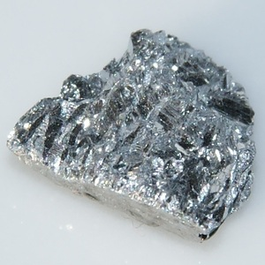
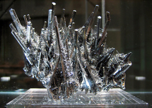

ⲥⲧⲏⲙ SB DM, ⲥⲑⲏⲙ B nn m, στίμι (PGM 1 108), στεῖμι (PLond 1 67), στίβι (Jer), ⲥⲧⲓⲙⲉⲟⲥ (PMéd), ⲥⲑⲉⲙⲉⲟⲥ (P 43), stibium, antimony, kohl: Jer 4 30 SB σ., Ez 23 40 S ⲡⲟⲩⲥ. B ⲡⲉⲥ. (2 sg f), Mor 17 12 S στιβίζειν: P 44 88 S ⲡⲉⲥ. كحل, K 204 B ⲡⲓⲥⲧ. ﻛ׳ اسول, DM V 18 8 ⲥ. ⲛⲕⲃⲧ (cf σ. κοπτικόν PGM, PLond), P 43 248 ⲥⲑ. · ⲕⲉⲛⲧⲓⲕⲟⲥ ﻛ׳ اصبهاني (v Dozy 2 446); ShA 1 201 S your mothers ϯ… ⲡⲉⲩⲥ. ⲉⲛⲉⲩⲃⲁⲗ, R 1 2 39 S ⲥ. made of ⲡⲕⲉⲣⲙⲉⲥ ⲛⲛϩⲏⲃⲥ lamp soot, CA 89 S ⲕⲟⲥⲙⲓ ⲙⲙⲟⲥ…ϩⲛⲟⲩⲥ., AZ 23 114 S pound all together ⲛⲑⲉ ⲙⲡⲥ., TurM 9 S sim, Ryl 243 S ⲛⲁⲗⲙⲁⲗⲁϥ (الملف) ⲛⲁⲟⲩⲉⲛ ⲉⲥ. wrappers of ⲥ. colour (dark blue ? purple ? Dozy 2 447 كحلي), ib 244 S ϩⲃⲟⲥ ⲛⲁⲛⲁϩ ⲛⲥ. sim, BM 1103 S ⲡⲓⲃⲁⲥ ⲉⲥ. V BerlAkadAbh '14 5 13.
(noun masculine)
substance
stibium, antimony, kohl [στιμι, στειμι, στιβι]


complete
324b
ⲥⲑⲏⲙ B v ⲥⲧⲏⲙ.
364b